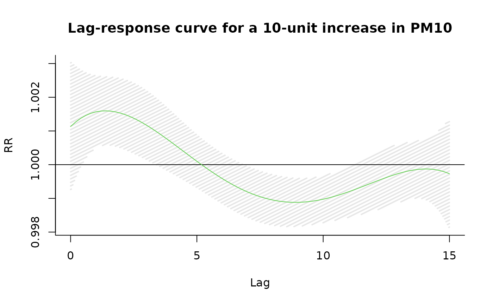
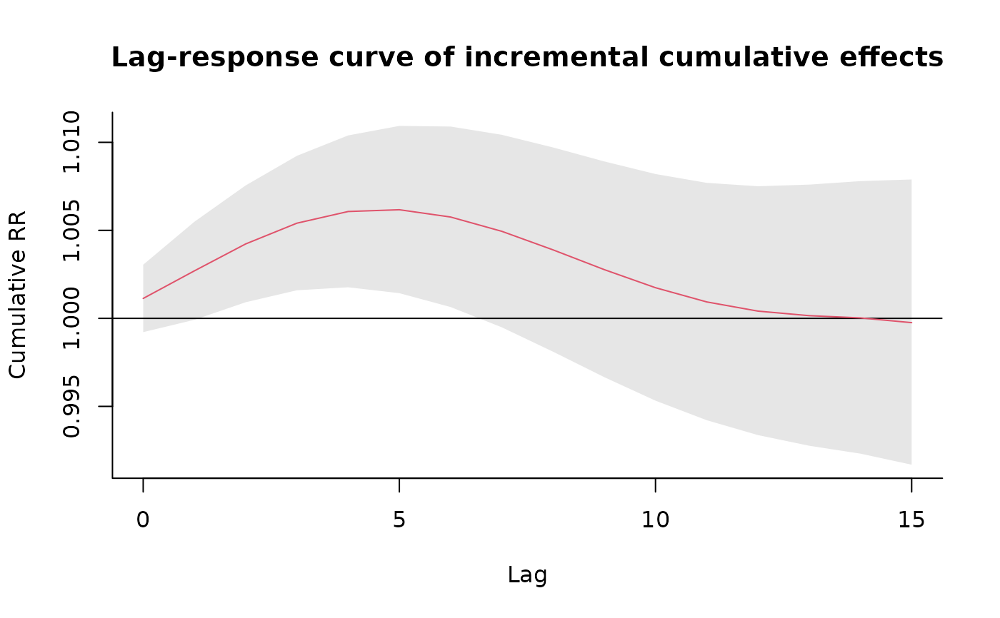
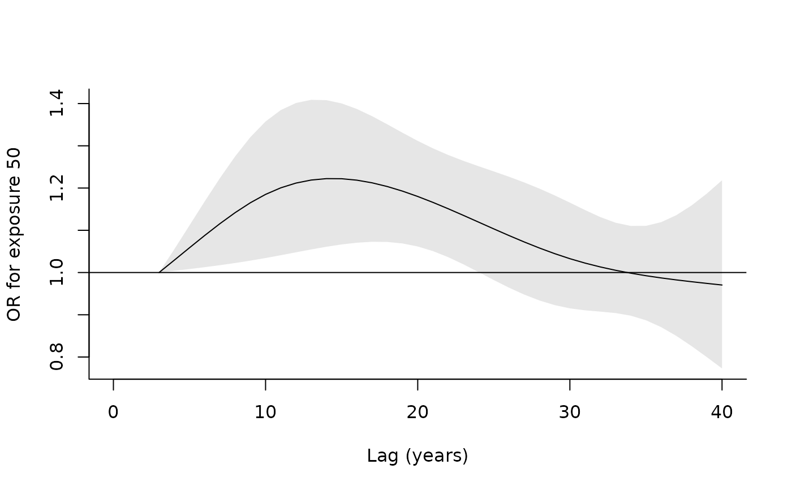
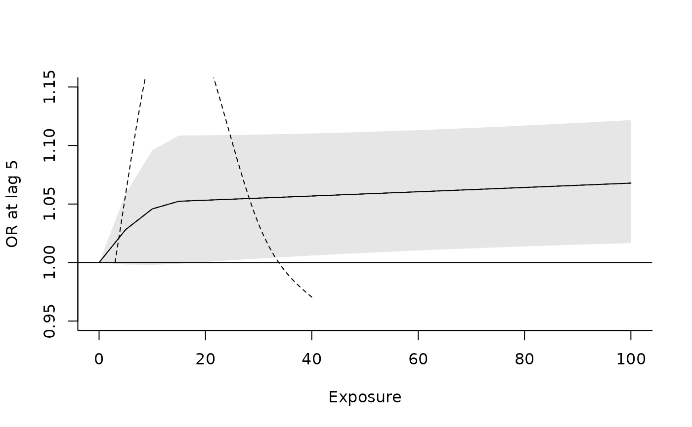
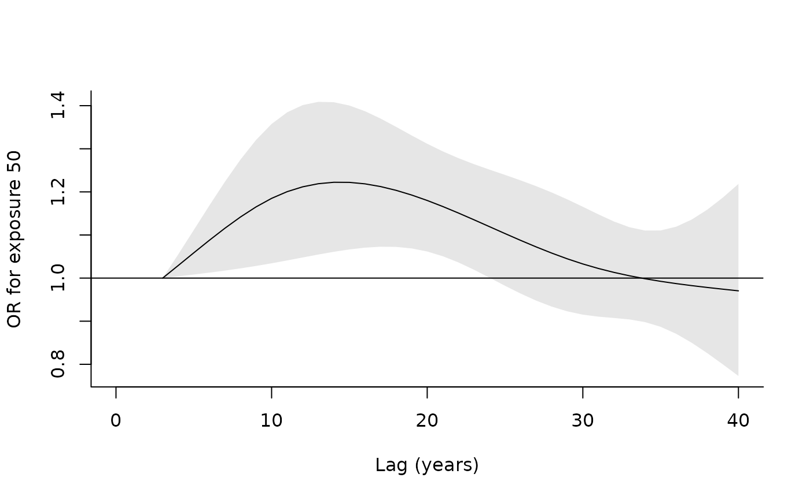
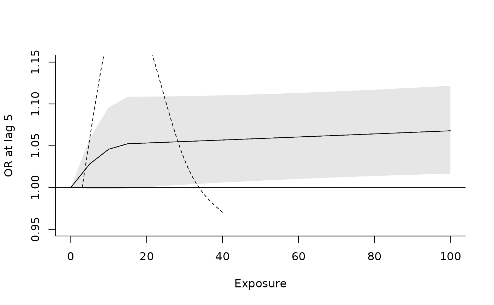

Generate a Cross-Basis Matrix for a DLNM
crossbasis.RdThe function generates the basis matrices for the two dimensions of predictor and lags, given the functions selected to model the relationship in each space. Then, these one-dimensions basis matrices are combined in order to create the related cross-basis matrix, which can be included in a model formula to fit distributed lag linear (DLMs) and non-linear models (DLNMs).
Arguments
- x
either a numeric vector representing a complete series of ordered observations (for time series data), or a matrix of exposure histories over the same lag period for each observation. See Details below.
- lag
either an integer scalar or vector of length 2, defining the the maximum lag or the lag range, respectively.
- argvar, arglag
lists of arguments to be passed to the function
onebasisfor generating the two basis matrices for predictor and lags, respectively. See Details below.- group
a factor or a list of factors defining groups of observations. Only for time series data.
- object
a object of class
"crossbasis".- ...
additional arguments. See Details below.
Details
The argument x defines the type of data. If a \(n\)-dimensional vector, the data are interpreted as a time series of equally-spaced and complete observations. If a \(n \times (L-\ell_0+1)\) matrix, the data are interpreted as a set of complete exposure histories at equally-spaced lags over the same lag period from \(\ell_0\) to \(L\) for each observation. The latter is general and can be used for applying DLMs and DLNMs beyond time series data. Lags are usually positive integers: if not provided, by default the minimum lag \(L0\) is set to 0, and the maximum lag \(L\) is set to 0 if x is a vector or to ncol(x)-1 otherwise. Negative lags are rarely needed but allowed.
The lists in argvar and arglag are passed to onebasis, which calls existing or user-defined functions to build the related basis matrices. The two lists should contain the argument fun defining the chosen function, and a set of additional arguments of the function. The argvar list is applied to x, in order to generate the matrix for the space of the predictor. The arglag list is applied to a new vector given by the sequence obtained by lag, in order to generate the matrix for the space of lags. By default, the basis functions for lags are defined with an intercept (if not otherwise stated). Some arguments can be automatically re-set by onebasis. Then, the two set of basis matrices are combined in order to create the related cross-basis matrix.
Common choices for fun are represented by ns and bs from package splines or by the internal functions of the package dlnm, namely poly, strata, thr, integer and lin. In particular, DLMs can be considered a special case of DLNMs with a linear function in argvar. Functions ps and cr are used to specify penalized models with an external method (see cbPen). See help(onebasis) and the help pages of these functions for information on the additional arguments to be specified. Also, other existing or user-defined functions can be applied.
The argument group, only used for time series data, defines groups of observations representing independent series. Each series must be consecutive, complete and ordered.
Value
A matrix object of class "crossbasis" which can be included in a model formula in order to fit a DLM or DLNM. It contains the attributes df (vector of length 2 with the df for each dimension), range (range of the original vector of observations), lag (lag range), argvar and arglag (lists of arguments defining the basis functions in each space, which can be modified if compared to lists used in the call). The method summary.crossbasis returns a summary of the cross-basis matrix and the related attributes, and can be used to check the options for the basis functions chosen for the two dimensions.
References
Gasparrini A. Distributed lag linear and non-linear models in R: the package dlnm. Journal of Statistical Software. 2011;43(8):1-20. [freely available here].
Gasparrini A, Scheipl F, Armstrong B, Kenward MG. A penalized framework for distributed lag non-linear models. Biometrics. 2017;73(3):938-948. [freely available here]
Gasparrini A. Modeling exposure-lag-response associations with distributed lag non-linear models. Statistics in Medicine. 2014;33(5):881-899. [freely available here]
Gasparrini A., Armstrong, B.,Kenward M. G. Distributed lag non-linear models. Statistics in Medicine. 2010;29(21):2224-2234. [freely available here]
Note
Missing values in x are allowed, but this causes the observation (for non-time series data with x as a matrix) or the following observations corresponding to the lag period (for time series data with x as a vector series) to be set to NA. Although correct, this could generate computational problems in the presence of a high number of missing observations.
The name of the crossbasis object will be used by crosspred in order to extract the related estimated parameters. If more than one variable is transformed through cross-basis functions in the same model, different names must be specified.
Before version 2.2.0 of dlnm, the argvar list could include a cen argument to be passed internally to onebasis for centering the basis. This step is now moved to the prediction stage, with a cen argument in crosspred or crossreduce (see the related help pages). For backward compatibility, the use of cen in crossbasis is still allowed (with a warning), but may be discontinued in future versions.
Warnings
In previous versions of the package the function adopted a different usage. In particular, the argvar list should not include a cen argument any more (see Note in this help page or onebasis). Users are strongly suggested to comply with the current usage, as backward compatibility may be discontinued in future versions of the package.
Meaningless combinations of arguments in argvar and arglag passed to onebasis could lead to collinear variables, with identifiability problems in the model and the exclusion of some of them.
It is strongly recommended to avoid the inclusion of an intercept in the basis for x (intercept in argvar should be FALSE, as default), otherwise a rank-deficient cross-basis matrix will be specified, causing some of the cross-variables to be excluded in the regression model. Conversely, an intercept is included by default in the basis for the space of lags.
See also
onebasis to generate one-dimensional basis matrices. The cb smooth constructor for cross-basis penalized spline smooths. crosspred to obtain predictions after model fitting. The method function plot to plot several type of graphs.
See dlnm-package for an introduction to the package and for links to package vignettes providing more detailed information.
Examples
### example of application in time series analysis - see vignette("dlnmTS")
# create the crossbasis objects and summarize their contents
cb1.pm <- crossbasis(chicagoNMMAPS$pm10, lag=15, argvar=list(fun="lin"),
arglag=list(fun="poly",degree=4))
cb1.temp <- crossbasis(chicagoNMMAPS$temp, lag=3, argvar=list(df=5),
arglag=list(fun="strata",breaks=1))
summary(cb1.pm)
#> CROSSBASIS FUNCTIONS
#> observations: 5114
#> range: -3.049835 to 356.1768
#> lag period: 0 15
#> total df: 5
#>
#> BASIS FOR VAR:
#> fun: lin
#> intercept: FALSE
#>
#> BASIS FOR LAG:
#> fun: poly
#> degree: 4
#> scale: 15
#> intercept: TRUE
#>
summary(cb1.temp)
#> CROSSBASIS FUNCTIONS
#> observations: 5114
#> range: -26.66667 to 33.33333
#> lag period: 0 3
#> total df: 10
#>
#> BASIS FOR VAR:
#> fun: ns
#> knots: 0.2777778 6.666667 14.44444 20.94444
#> intercept: FALSE
#> Boundary.knots: -26.66667 33.33333
#>
#> BASIS FOR LAG:
#> fun: strata
#> df: 2
#> breaks: 1
#> ref: 1
#> intercept: TRUE
#>
# run the model and get the predictions for pm10
library(splines)
model1 <- glm(death ~ cb1.pm + cb1.temp + ns(time, 7*14) + dow,
family=quasipoisson(), chicagoNMMAPS)
pred1.pm <- crosspred(cb1.pm, model1, at=0:20, bylag=0.2, cumul=TRUE)
# plot the lag-response curves for specific and incremental cumulative effects
plot(pred1.pm, "slices", var=10, col=3, ylab="RR", ci.arg=list(density=15,lwd=2),
main="Lag-response curve for a 10-unit increase in PM10")

plot(pred1.pm, "slices", var=10, col=2, cumul=TRUE, ylab="Cumulative RR",
main="Lag-response curve of incremental cumulative effects")

### example of application beyond time series - see vignette("dlnmExtended")
# generate the matrix of exposure histories from the 5-year periods
Qnest <- t(apply(nested, 1, function(sub) exphist(rep(c(0,0,0,sub[5:14]),
each=5), sub["age"], lag=c(3,40))))
# define the cross-basis
cbnest <- crossbasis(Qnest, lag=c(3,40), argvar=list("bs",degree=2,df=3),
arglag=list(fun="ns",knots=c(10,30),intercept=FALSE))
summary(cbnest)
#> CROSSBASIS FUNCTIONS
#> observations: 600
#> range: 0 to 1064
#> lag period: 3 40
#> total df: 9
#>
#> BASIS FOR VAR:
#> fun: bs
#> knots: 15
#> degree: 2
#> intercept: FALSE
#> Boundary.knots: 0 1064
#>
#> BASIS FOR LAG:
#> fun: ns
#> knots: 10 30
#> intercept: FALSE
#> Boundary.knots: 3 40
#>
# run the model and predict
library(survival)
mnest <- clogit(case~cbnest+strata(riskset), nested)
pnest <- crosspred(cbnest,mnest, cen=0, at=0:20*5)
# bi-dimensional exposure-lag-response association
plot(pnest, zlab="OR", xlab="Exposure", ylab="Lag (years)")
 # lag-response curve for dose 60
plot(pnest, var=50, ylab="OR for exposure 50", xlab="Lag (years)", xlim=c(0,40))

# exposure-response curve for lag 10
plot(pnest, lag=5, ylab="OR at lag 5", xlab="Exposure", ylim=c(0.95,1.15))
### example of extended predictions - see vignette("dlnmExtended")
# compute exposure profiles and exposure history
expnested <- rep(c(10,0,13), c(5,5,10))
hist <- exphist(expnested, time=length(expnested), lag=c(3,40))
# predict association with a specific exposure history
pnesthist <- crosspred(cbnest, mnest, cen=0, at=hist)
with(pnesthist, c(allRRfit,allRRlow,allRRhigh))
#> 20 20 20
#> 3.503928 1.240109 9.900351
### example of user-defined functions - see vignette("dlnmExtended")
# define a log function
mylog <- function(x) log(x+1)
# define the cross-basis
cbnest2 <- crossbasis(Qnest, lag=c(3,40), argvar=list("mylog"),
arglag=list(fun="ns",knots=c(10,30),intercept=FALSE))
#> Error in get(fun, mode = "function", envir = envir): object 'mylog' of mode 'function' was not found
summary(cbnest2)
#> Error: object 'cbnest2' not found
# run the model and predict
mnest2 <- clogit(case~cbnest2+strata(riskset), nested)
#> Error in eval(predvars, data, env): object 'cbnest2' not found
pnest2 <- crosspred(cbnest2, mnest2, cen=0, at=0:20*5)
#> Error: object 'cbnest2' not found
# plot and compare with previous fit
plot(pnest2, zlab="OR", xlab="Exposure", ylab="Lag (years)")
#> Error: object 'pnest2' not found
plot(pnest2, var=50, ylab="OR for exposure 50", xlab="Lag (years)", xlim=c(0,40))
#> Error: object 'pnest2' not found
lines(pnest, var=50, lty=2)
plot(pnest2, lag=5, ylab="OR at lag 5", xlab="Exposure", ylim=c(0.95,1.15))
#> Error: object 'pnest2' not found
lines(pnest, lag=5, lty=2)

### example of penalized models - see vignette("dlnmPenalized")
# to be added soon
# lag-response curve for dose 60
plot(pnest, var=50, ylab="OR for exposure 50", xlab="Lag (years)", xlim=c(0,40))

# exposure-response curve for lag 10
plot(pnest, lag=5, ylab="OR at lag 5", xlab="Exposure", ylim=c(0.95,1.15))
### example of extended predictions - see vignette("dlnmExtended")
# compute exposure profiles and exposure history
expnested <- rep(c(10,0,13), c(5,5,10))
hist <- exphist(expnested, time=length(expnested), lag=c(3,40))
# predict association with a specific exposure history
pnesthist <- crosspred(cbnest, mnest, cen=0, at=hist)
with(pnesthist, c(allRRfit,allRRlow,allRRhigh))
#> 20 20 20
#> 3.503928 1.240109 9.900351
### example of user-defined functions - see vignette("dlnmExtended")
# define a log function
mylog <- function(x) log(x+1)
# define the cross-basis
cbnest2 <- crossbasis(Qnest, lag=c(3,40), argvar=list("mylog"),
arglag=list(fun="ns",knots=c(10,30),intercept=FALSE))
#> Error in get(fun, mode = "function", envir = envir): object 'mylog' of mode 'function' was not found
summary(cbnest2)
#> Error: object 'cbnest2' not found
# run the model and predict
mnest2 <- clogit(case~cbnest2+strata(riskset), nested)
#> Error in eval(predvars, data, env): object 'cbnest2' not found
pnest2 <- crosspred(cbnest2, mnest2, cen=0, at=0:20*5)
#> Error: object 'cbnest2' not found
# plot and compare with previous fit
plot(pnest2, zlab="OR", xlab="Exposure", ylab="Lag (years)")
#> Error: object 'pnest2' not found
plot(pnest2, var=50, ylab="OR for exposure 50", xlab="Lag (years)", xlim=c(0,40))
#> Error: object 'pnest2' not found
lines(pnest, var=50, lty=2)
plot(pnest2, lag=5, ylab="OR at lag 5", xlab="Exposure", ylim=c(0.95,1.15))
#> Error: object 'pnest2' not found
lines(pnest, lag=5, lty=2)

### example of penalized models - see vignette("dlnmPenalized")
# to be added soon